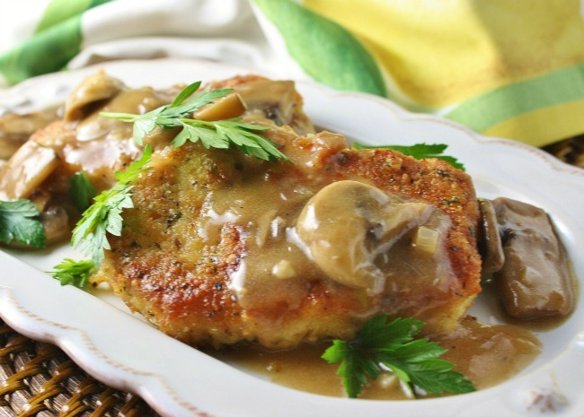

Butter Schnitzel

A fine-cooked schnitzel fresh from Germany
A perfectly balanced schnitzel originated from Germany, brought forward by user The Nomatrix at allrecipes.com.
With a combination of meat, mushrooms, and self-made sauce, this ought to be delicious.
Ingredients
- 12 boneless pork loin chops, 3/4 inch thick
- 2 cups of bread crumbs
- 2 tablespoons of grated Parmesan cheese
- 1 tablespoon of dried parsley flakes
- 1 tablespoon of cornstarch
- 1 teaspoon of salt
- 2 tablespoons of water
- 1/2 teaspoon of freshly ground pepper
- butter (1/2 pound)
- 2 cloves of garlic, minced
- 1 cup of dry white wine (optional)
- mushrooms, sliced (1 pound)
- olive oil
Directions
- Pound the pork chops with a spiked meat mallet until 1/4 inch thick; set aside. In a large bowl, combine the bread crumbs,
Parmesan cheese, parsley flakes, salt, and pepper. Press the pork into the crumbs to bread thoroughly; set aside.
- Melt butter in a large saucepan over medium-high heat. Stir in the garlic and cook until fragrant, about 30 seconds.
Pour in the wine and sliced mushrooms. Allow to simmer and cook until the mushrooms have softened, about 10 minutes.
Stir together the cornstarch and water, then add to the mushroom sauce. Simmer until the sauce has thickened, then remove from the heat and set aside.
- Meanwhile, heat a few tablespoons of olive oil in a large, nonstick skillet over medium-high heat.
the pork cutlets a few at a time until golden brown and cooked through, 1 to 2 minutes per side. Serve with reserved mushroom sauce.
Return to main page